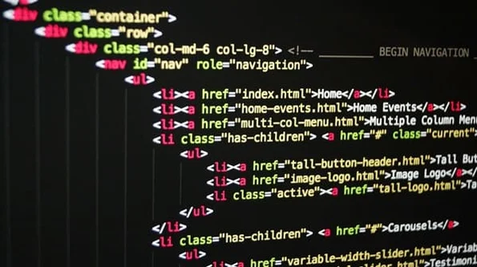
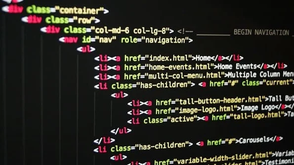

Description du projet :
L’objectif de ce projet était de réaliser une reproduction partielle du site web de Burger King
afin de mettre en pratique mes compétences en HTML et CSS. Avec un design fidèle à l’identité visuelle de la marque.
J'ai réalisé ce projet individuellement, ce qui m’a permis d’explorer concrètement la structuration d’une page web,
la mise en page responsive et l’organisation des contenus. Il m’a également donné l’occasion de travailler sur l’expérience utilisateur,
en veillant à ce que la navigation soit intuitive et agréable sur différents appareils.
HTML5
CSS3
VS code


 
